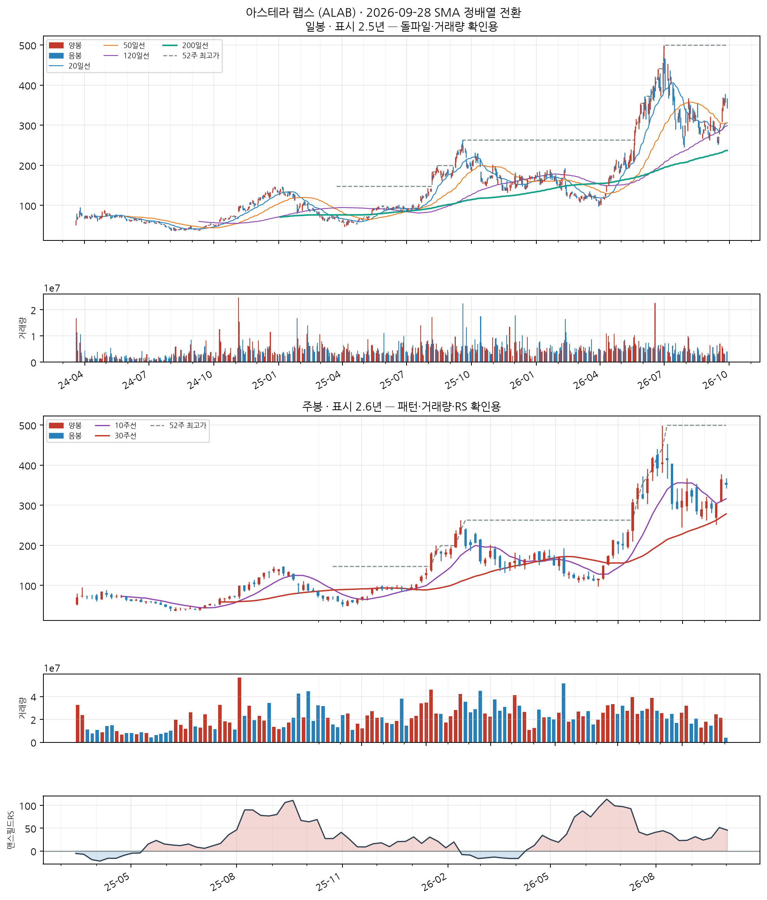

아스테라 랩스 (ALAB)
신규 NASDAQInformation Technology
업종 참고: RS 평균 68/99(업종 중 상위 1%) · 오늘 신호 12건 · 업종 평균이 나스닥종합 대비 +14.3%p(126일), 종목별 편차 ±51%p
🧪 자체 섹터 분류(실험적, 참고용): Information Technology (아스테라 랩스·AMD 등 12종목)
섹터 내 RS 순위: 1/12위 (RS 99/99)
섹터 1~3위: 아스테라 랩스(99), AMD(99), 인텔(98)
※ 자체 상관관계 계산(최근 1년) — 검증 시 기준업종 11개 중 8개 정확. 주 단위로 구성종목이 일부 바뀔 수 있음(주간 일치도 실측 0.53)
섹터 내 RS 순위: 1/12위 (RS 99/99)
섹터 1~3위: 아스테라 랩스(99), AMD(99), 인텔(98)
※ 자체 상관관계 계산(최근 1년) — 검증 시 기준업종 11개 중 8개 정확. 주 단위로 구성종목이 일부 바뀔 수 있음(주간 일치도 실측 0.53)
종가 $351.31
정배열 1일차거래량비 1.0x정배열 후 +0.0%

📐 차트 패턴 판정: 후보 없음 후보 없음 판정 기준(PDF)
세 패턴 모두 필수 조건을 채운 후보가 없다(가장 가까운 컵위드핸들 후보: 구조 독립성: 부모 컵(오른쪽 림 2026-06-18)의 핸들 하락(저점 2026-07-24)을 새 컵의 왼쪽 절반으로 재분할한 후보 — 자체 핸들이 아직 없다, 독립된 새 구조의 증거가 없다).
가장 강한 반증 컵위드핸들: 구조 독립성: 부모 컵(오른쪽 림 2026-06-18)의 핸들 하락(저점 2026-07-24)을 새 컵의 왼쪽 절반으로 재분할한 후보 — 자체 핸들이 아직 없다, 독립된 새 구조의 증거가 없다; 역헤드앤숄더: 어깨 대칭: 어깨 높이차 37.8% — 과도(25% 초과); 이중바닥: 두 저점 일치: 저점 차이 60.5% — 같은 지지대로 보기 어려움(10% 초과)
경쟁 후보·더 단순한 설명 더 단순한 설명: 최근 26주 상승 추세 지속(+224.2%) — 베이스 없음
추가로 필요한 데이터 장중 고저 기준 깊이(여기 수치는 주봉 종가 기준) · 이번 주 완결 주봉(2026-10-02 라벨) — 미완결이라 판정에서 제외
패턴만으로 매수 추천이나 목표 달성 확률을 만들지 않습니다. 수치 기준은 잠정치이며 라벨 데이터로 검증되지 않았습니다.
C
C — 분기 실적 성장 우수
2026 분기(10-Q) · 순이익 +198.9% · EPS +186.2% · 매출 +104.5%
SEC EDGAR(10-Q/10-K) 기준 · 분기 단독 전년동기 대비 · 직전 분기보다 성장률이 높아짐(가속)
A
A — 연간 실적 성장 양호
2025 연간(10-K) · 순이익 흑자전환($-83M→$+219M) · EPS 흑자전환($-0.6→$+1.2) · 매출 +115.1%
SEC EDGAR(10-Q/10-K) 기준 · 연간 전년동기 대비 · 최근 3년 연속 증가는 아님 — 오닐 A 기준 미충족으로 한 단계 낮춤
N
N — 신고가·모멘텀 데이터 없음
신고가 데이터 없음
S
S — 수급(거래량) 양호
20일 평균 대비 1.01배
유통주식수·순매수 데이터는 미보유 (거래량으로만 근사)
L
L — 주도주(상대강도) 우수
RS 등급 99/99 (126거래일 ≈ 6개월 기준 · 유니버스 952종목 중 백분위) · 지수대비 +177.3%p
상위 시가총액 유니버스 기준 — KRX 전체 대비 백분위 아님 · 오닐의 RS Rating은 52주 기준이지만 여기는 126거래일로, 같은 리포트의 6개월 모멘텀과 기간을 맞춘 값이다(원전과 다름)
I
I — 기관·외국인 수급 데이터 없음
미국 종목은 기관 수급 데이터 소스 없음 (SEC Form 13F는 최대 45일 지연되는 분기 스냅샷이라 부적합)
M
M — 시장방향 양호
IXIC 지수가 60일선 위
**오닐의 M(분산일·추종일 계수)이 아니라 지수의 이동평균 상회 여부**를 쓴 대용값이다 · 실제 매매 필터로는 미적용(표시 전용) — 종목 선별보다 지수 자체 타이밍이 더 효율적이라는 자체 검증 결과 있음 (reports/vs_kospi.md)